Starting an audiobook or e-book is a real commitment, which makes choosing the next one harder than it looks. Readers want something that fits their mood, their taste and the hours ahead of them, and that raises its own challenges at every step of discovery. Storytel Genie is one of Storytel's projects exploring new ways to help people find their next great read.
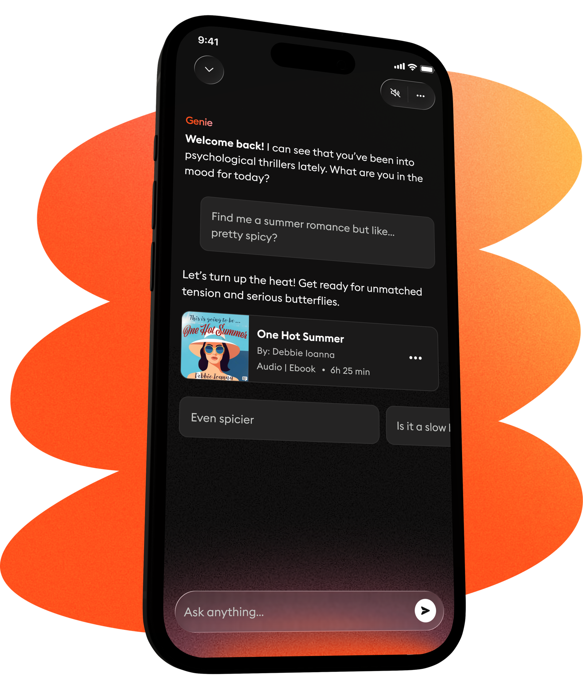
AI has been a hot topic at Storytel since the first GPT models arrived, and we've worked hard to stay ahead. Our first big AI move was VoiceSwitcher. It brought a strategic partnership with ElevenLabs and made headlines in the Swedish press.
Since then, we've launched two more AI features: Recaps and Story Scan.
Users, publishers and authors have embraced these features, but they have also raised real questions about AI's role in the future of storytelling.
That's when we realized AI at Storytel needed a clear identity, one that builds trust and transparency across the product and inspires people to use it.
It started with getting everyone on board. With the brand and product design teams, we shaped a vision for AI at Storytel and brought it to life in a video. It premiered at our annual Campfire party, which also marked Storytel's 20th anniversary, and it was where the whole company met Genie for the first time.
Our concept was built on the idea of Genie as an extension of the Storytel brand: there to elevate the experience and give users something purposeful, helpful and distinctly Storytel.
To keep Genie close to our core, we based its branding on the Campfire concept. It has been the foundation of our brand from the very beginning, when we were called “Bokilur”, all the way to the orange bubble we know today.
But to do that, we first had to define Genie's objectives.
Recognizable
One identity, enforced by tokens rather than goodwill.
Trusted
Admitting fallibility in the product, not in a help centre.
Transparent
Users always know when content is AI-generated. Specific, testable, and the reason most of what follows exists.
Magical
A living entity, not a spinner — held to a craft standard.
Valuable
Measured by books on shelves, not by sessions opened.
To make sure Genie only offers users real value and stays transparent at every step, we started by setting a clear rule for when and where Genie appears in the user experience.
Is the feature powered by AI?
-
No
Not GenieNo AI, nothing to attribute. It is simply the product.
-
Yes
Is the AI visible to the user?
-
No
Not GenieThe AI never surfaces, so there is nothing for a mark to label.
-
Yes
Does it generate bespoke content — different for each user?
-
No
Not Genie, but transparency around AIEveryone gets the same output, so it is not Genie speaking — but the user still has to know AI was involved.
-
Yes
Do users opt in to the feature?
-
No
Genie branding — discreetThe user did not ask for it, so the mark stays quiet.
-
Yes
Genie branding — obviousThe user asked for it, so Genie can be present and named.
-
-
-
The product domain's AI strategy for 2026 identified three areas where Genie would shape the product offering:
Hyper-personalised discovery & proactive curation
These features aim to evolve the discovery engine from a reactive recommendation system into a proactive, context-aware partner, driving core engagement and retention.
Immersive & format-agnostic storytelling
These features use AI as a creative tool to produce richer audio experiences and remove format barriers, primarily to differentiate the product experience.
Non-fiction & knowledge extraction
This pillar expands the utility from entertainment to active learning and the non-fiction market.
Three features were chosen to be explored and prepared for Genie's public release at midsummer in Sweden, 2026: Genie Chat (Discovery), Top Picks (Discovery) and Recaps (Comprehension).
Genie Chat
Genie Chat began as a spike: a small group came together with one goal, to innovate side by side and find the idea worth building. Over three months, we explored, prototyped and challenged our own assumptions until the concept took shape. The result was Genie Chat, a conversational way to find your next story.
It quickly became clear that Genie Chat would be one of the most substantial features in the Genie launch and the centrepiece of it all. That raised the bar for everything, from how the agent understood and answered readers to how every detail of the interface looked and felt.
With Midsummer 2026 approaching, the team headed to a villa in Copenhagen in early May for a three-day hackathon. Away from everyday routines, we focused on the final stretch: fine-tuning the agent to make its answers sharper and more helpful, and adding the last brushstrokes to the UI so it felt crisp, polished and distinctly Storytel.
In June, Genie Chat launched at Midsummer as the heart of Genie's public release.
VoiceOver / Talkback
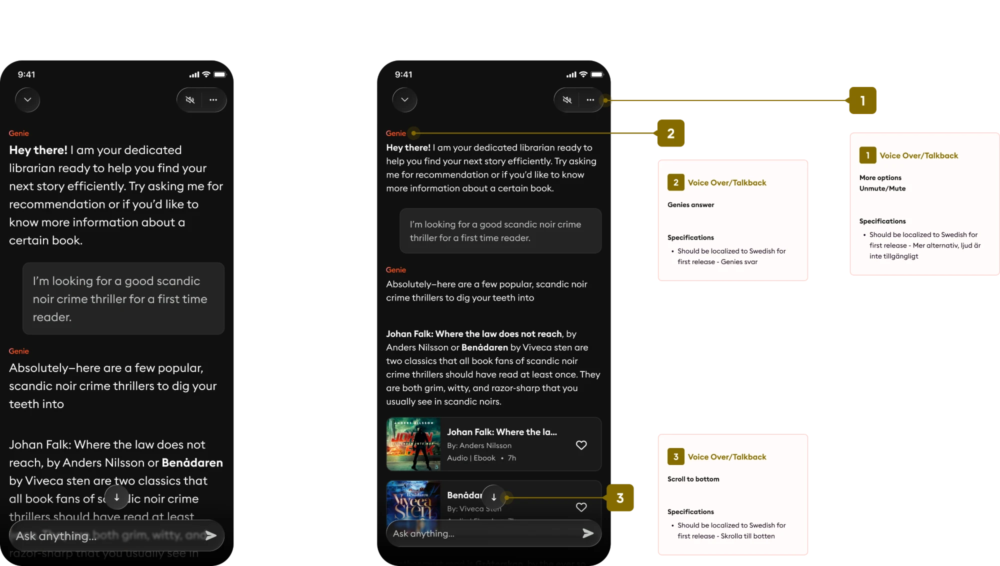
Conversation states
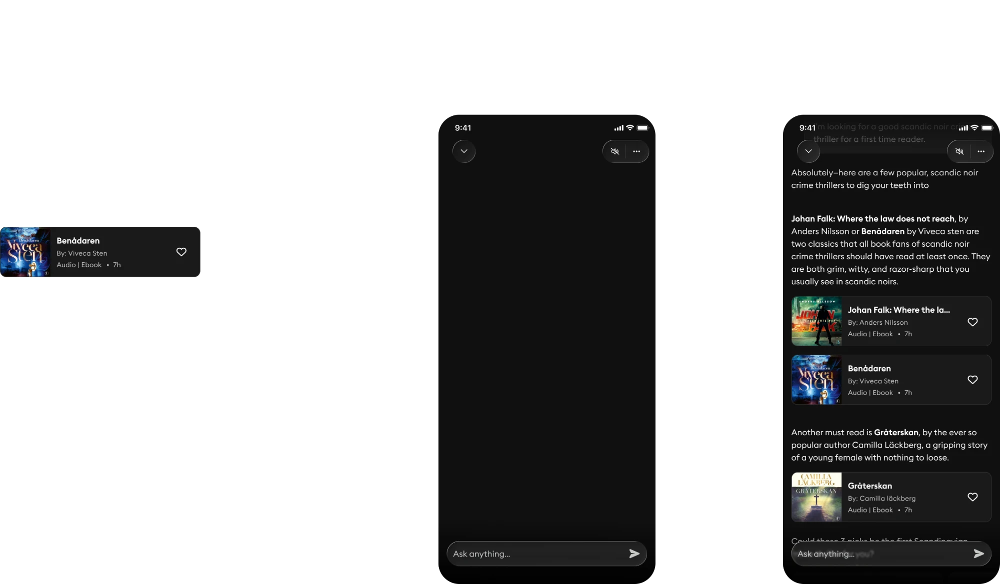
Book card variants
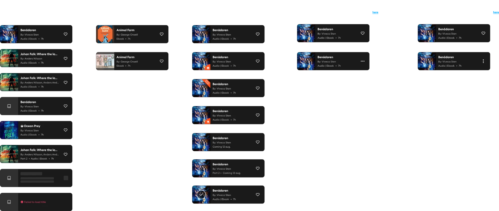
Returning user
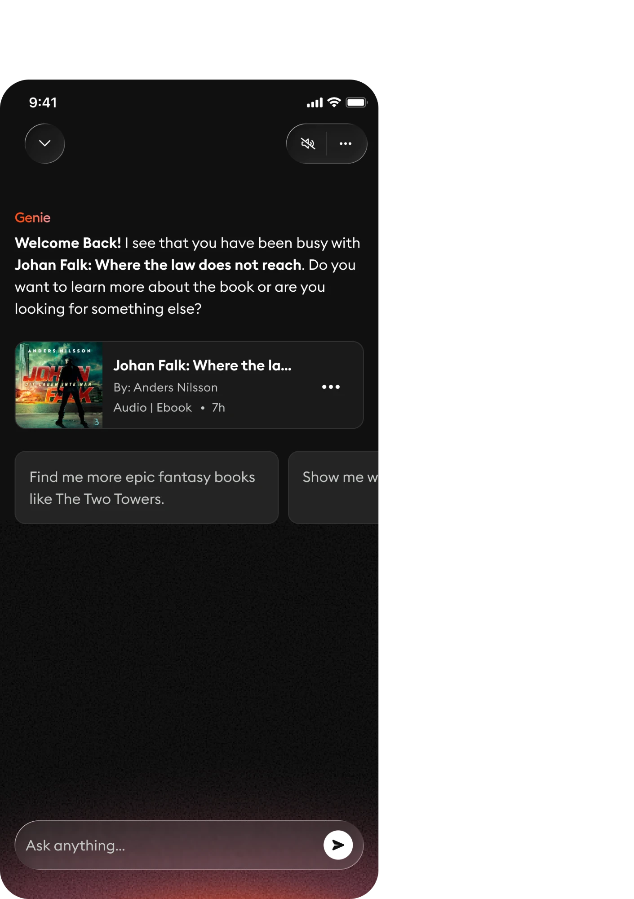
Error and retry
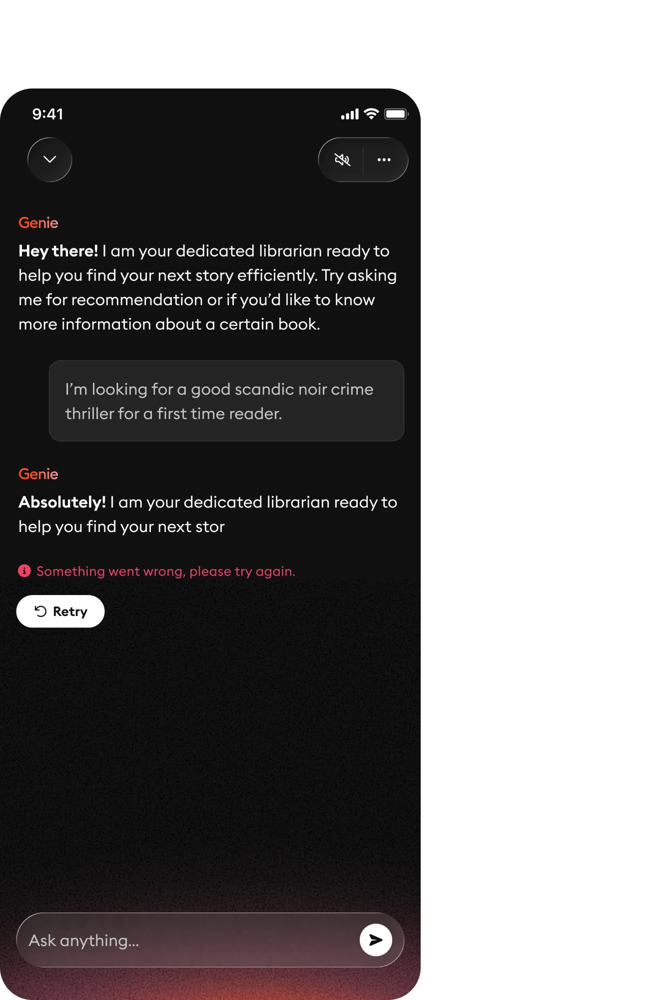
Drag or scroll inside the frame to move across the flow.
What we shipped
Genie is not a feature. It is the umbrella. Six surfaces ship under one identity, which is what makes it a system rather than a badge — and what makes the governance framework worth the effort, because the sixth surface has to be as legible as the first.
Chat
Conversational discovery — ask Genie for a recommendation.
Top Picks for You
AI-curated recommendations that move with your listening.
Recap
Summaries of your last session; rewind 5, 10 or 15 minutes.
Sleep Summary
A recap for when you fall asleep mid-listen.
Story Scan
Scan a cover to get context and related titles.
FAB
The persistent, animated entry point into Genie, carried in the bottom navigation.
The FAB — one entry point, two platforms
Genie's entry point lives in the bottom navigation, which is the one place the two platforms disagree about almost everything. iOS carries it inline in the tab bar; Android lifts it out as a floating action button above a pill. Same signifier, same accent, two native grammars.
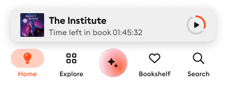
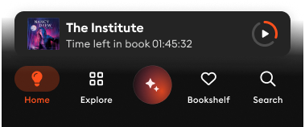
Drag the slider right to show Android
Three of them are worth walking through in detail, because each one turned on a different problem: a voice with no layout to hide behind, a component that has to survive generated content, and a feature that is mostly its own failure states.
Chat: voice is the interface
In a chat surface there is no layout to hide behind. The voice is the interface. So we wrote the tone rules alongside the UI, not after it — and they are specific enough to review a build against.

-
Humble under uncertainty
Genie is allowed to be unsure, out loud.
“I think this might be the story you're looking for, but let me know if we should keep searching.” -
Collaborative “we”
A deliberate, documented exception to Storytel's general rule against “we” — because here it is not the company speaking, it is the user's partner in the search.
“Should we keep digging?” -
Visibly working
Scanning, digging, looking. Active verbs, plus imagery like “scanning the shelves,” keep the librarian persona alive and make the wait legible.
-
Enthusiasm with a purpose
Great, love, perfect, interesting — used to validate the user's taste, not to perform friendliness.
-
Encouragement that removes friction
So the user never feels they are bothering the AI with an odd request.
“Challenge accepted.” · “I love a good book mystery.”
And one prohibition that saved us from ourselves: warm, vivid, to the point — and explicitly no poetic fluff. It is very easy to write an AI librarian who sounds like a fantasy novel. It is much harder, and much better, to write one who sounds like a colleague who reads a lot.
The recommendation copy has its own rules, and they are tighter than you would expect: address the user directly; at most one question per text, and not in every example; never name Genie inside a recommendation; avoid “we”; avoid the word “tale”; keep it near 200 characters. Constraints like these are what make a hundred generated blurbs feel like one product.
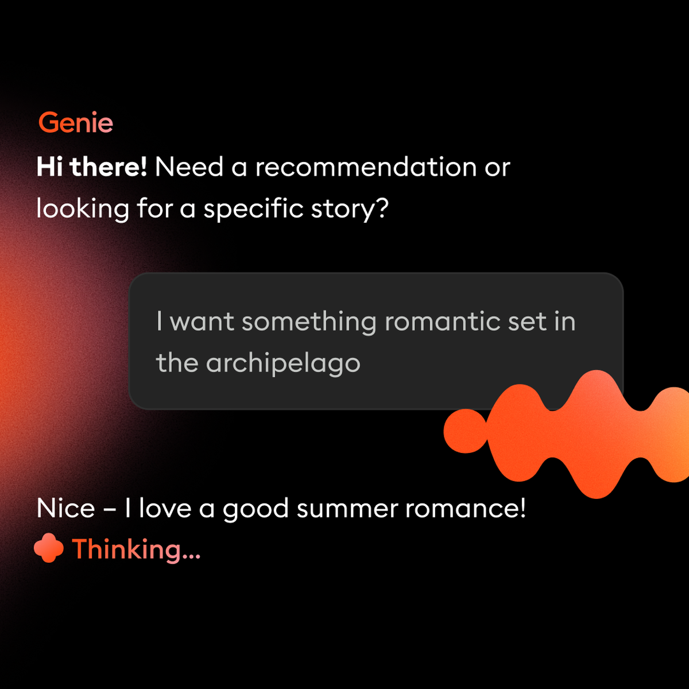
Entering the chat from a recommendation prompt.
Genie surfacing proactively from the home experience.
Top Picks: the design was in the rules
Top Picks looks like a carousel of recommendations. Almost all the design work is in the rules underneath it, because the content is generated and therefore unpredictable in length, completeness and availability. A carousel is easy. A carousel that survives whatever the model and the catalogue hand it is not.
The specification
- Swiping snaps the next card to the border of the screen.
- One signifier renders large; two or more render medium.
- With dynamic text enabled, fixed card height is abandoned and every card takes the height of the tallest card in the carousel.
- Blurb text truncates after eight lines.
- The Genie blur stays anchored in the same position regardless of screen size.
- Only released formats are named. Audio released with an ebook still pending shows “Audio.” Nothing released shows the release date instead — “Coming 6 May 2026.”
All of it specified across iPhone 13 mini, 16 and 17 — 375, 393 and 402 points — in light and dark mode, horizontal and vertical. It is the least glamorous part of the work, and the part that decided whether the component held.
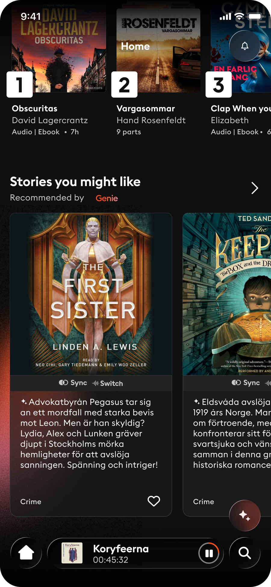

Recaps: nine states for one feature
This is the section I would keep if I could keep only one. Recaps let you pick up a story where you lost the thread — or where you fell asleep. In the Figma file it exists as nine designed states, and the count is the point.
| Content variants | Entry contexts | Designed failures |
|---|---|---|
| Recap — AI Summaries | From the player | Threshold not reached |
| Recap — Transcripts | After the sleep timer | Too many requests |
| Recap — Fallback | — | API, timeout or offline |
Three content variants, because the quality of what we can generate depends on what exists for that title: a real AI summary where we have one, a transcript-based recap where we do not, and a fallback beneath that. Two entry contexts, because arriving deliberately from the player and waking up to a stopped sleep timer are different emotional situations and deserve different framing. And three failure states, each with an authored reason rather than a generic error.
“You haven't listened to enough of this book yet” is a design decision, not a fallback.
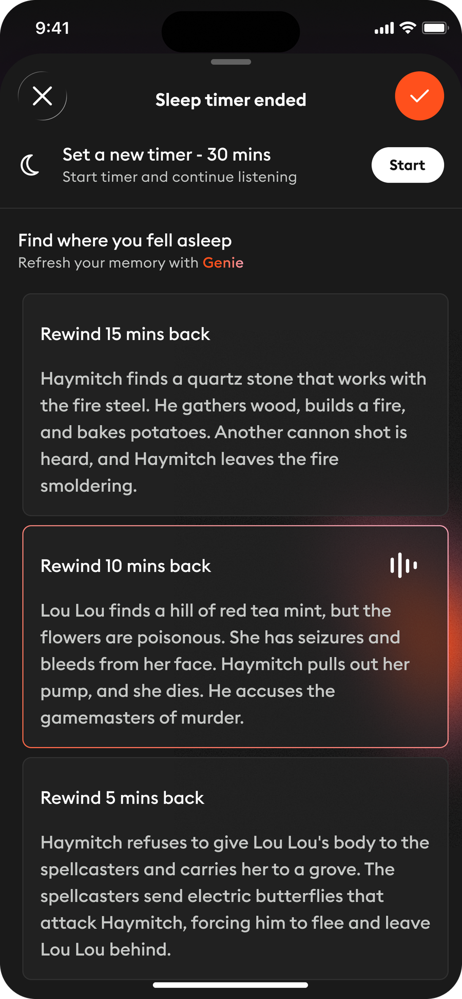
After the sleep timer. “Find where you fell asleep. Refresh your memory with Genie.” Rewind 15, 10 or 5 minutes.
An AI feature that only works in the happy path is not shipped, it is demoed. Users meet the edges constantly — they hit a daily limit, they are on a train with no signal, they are forty minutes into a twelve-hour book. Those three error states did more for trust than any amount of polish on the successful case, because they are the moments where a system either explains itself or feels broken.

Craft: a living entity, built to degrade gracefully
The Genie entity — the blob of orange light that appears when Genie is thinking, greeting or working — is built as Lottie animations with shaders layered on top: turbulent displacement, wiggle, blur and grain. That combination is what gives it a liquid, alive quality rather than the look of a spinner.
It exists at two quality levels. The full shader stack runs where the device can carry it; a gradient-fill fallback runs where it cannot. The reason is mundane and worth stating plainly: the full stack heats phones. A beautiful animation that cooks the device is a bad design. Building the fallback in from the start was a craft decision, not a compromise — and it applies to light and dark mode alike.
The authored states are separate assets, not one loop. Motion is treated as a component set with the same discipline as a button.
Recognisable, enforced by tokens
Recognisable is a pillar, which means it has to be enforceable rather than aspirational. It lives in the design system as tokens shared by the app, the in-app marketing and this presentation.
Storytel Euclid — Regular 400, Medium 500, Semibold 600.
The accent colour does one job: it marks Genie. The moment it starts decorating unrelated UI, recognisability is gone and no amount of guideline documentation gets it back.
The same rule extends outward. Marketing and product share one look deliberately, so that nobody sees a shimmering advertisement, opens the app, and wonders why nothing resembles it.

The honest numbers
Genie launched in Sweden. As of mid-August 2026, the picture is genuinely mixed — and we think the mixed version is more useful to share than a clean one.
Sweden, launch to mid-August 2026. Product analytics, read from the launch review of 13 August 2026.
July — the adoption funnel
What is working
When people talk to Genie, it does its job. A third of real conversations end with a book on a shelf, which is on par with — or better than — the conversion rate of a user scrolling Home and saving something. The interaction is sound. The wrapper holds.
What is not
Adoption is still low, and we are not going to dress that up. Retention is respectable, but for a small core. Feedback and average ratings are trending slowly upwards and towards more constructive sentiment — which is encouraging, and is not the same as growth.
The interaction works. Getting people to try it once is the design problem for the next quarter.
There is a version of this case that shows the 190,000 and stops. It would be less useful. The funnel above is the actual state of an AI feature nine months in, at a company that did the branding work carefully.
One more signal worth reporting: publishers. Reception at our Next Chapter event was very positive. The concerns that arrived afterwards by email were pointed but actionable, mostly about how content is used in training and which parts are opt-in. That is a communication and documentation gap, and a reminder that an AI product has an audience beyond its users.
What I would carry into the next one
-
01
Brand the AI before you scale it
A face makes a feature legible. Six surfaces under one identity read as a system; six unbranded ones read as six experiments — and users judge experiments harshly.
-
02
Design the failures first
Three error states with authored reasons did more for trust than any amount of polish on the happy path. With a generative feature, the edges are not edge cases.
-
03
Voice is a design material
We wrote the tone rules alongside the UI. Humility under uncertainty is a component, not a copy tweak — and it needs the same review rigour as a layout.
-
04
Transparency is a design constraint, and a useful one
Committing to “users always know when content is AI-generated” forced better decisions everywhere downstream, including in the places nobody was looking.
What's next
-
Mid-Sept 2026
Denmark ships
With a local press release, translated support material, a privacy policy update and a tone-of-voice review by the Danish team — because a warm, humble voice does not survive machine translation.
-
This month
A two-metre phone
At the Swedish book fair there will be a giant physical phone, built so that people can put their hands on Genie and try it. Given that our central finding is a discovery problem rather than an interaction problem, a two-metre phone in a hall full of readers may be the most rational design decision in the whole project.
-
29 Oct 2026
Bogforum
The Danish book fair follows, carrying the same system outward one more market.

Storytel Product Design — with Brand, Marketing, User Research, and the Genie core team.
Teaching the interaction
Conversational discovery is a new interaction for most of our users, so four in-app marketing cards carry the teaching: Meet your personal librarian positions Genie as a person rather than a robot; Chat like you talk gives explicit permission to write naturally, with a real example; Find your perfect match shows the kind of question Genie can answer; and Discover Genie all across the app reveals the umbrella behind the chat.
It sits here rather than in the body of the case because it is the campaign around the work, not the work. The product decision underneath it is the one that matters: marketing and product share one visual system deliberately, so that nobody meets a shimmering advertisement, opens the app, and wonders why nothing resembles it.
Appendix — sources
Compiled 10 September 2026. Every figure above is drawn from the following material; none are estimated.
Figma
- Storytel Genie — brand system and feature inventory
- Genie Chat — conversation surface and states
- Front Page — “↳ Top Picks” specs and updates; design tokens read from this file
- Player — “Recaps · Final · iOS”
Internal documents
- Genie Q1/Q2 — brand strategy, target groups, roadmap, feature strategy, KPIs, risks and mitigations
- Genie Figma summary — feature inventory, brand pillars, design principles, visual and animation system
- Genie copy explorations — tone of voice, chat guidelines, recommendation copy rules, final in-app marketing copy
- Genie Denmark launch notes, 13 Aug 2026 — launch results, funnel, publisher feedback, Denmark plan
- Launch video, system prompts, analytics, visual exploration, launch comms, and the Lottie, Motion ID and sound reference folders
Local assets
- Genie documentation — 3D device renders, motion files, and the Lottie sets for splash and thinking
Not consulted
- The brand portal requires SSO and was not accessible. The colour and type values in chapter 9 come from the production Figma design system instead, so they are authoritative for product UI; if the brand portal specifies different values for print or campaign use, chapter 9 should be checked against it.